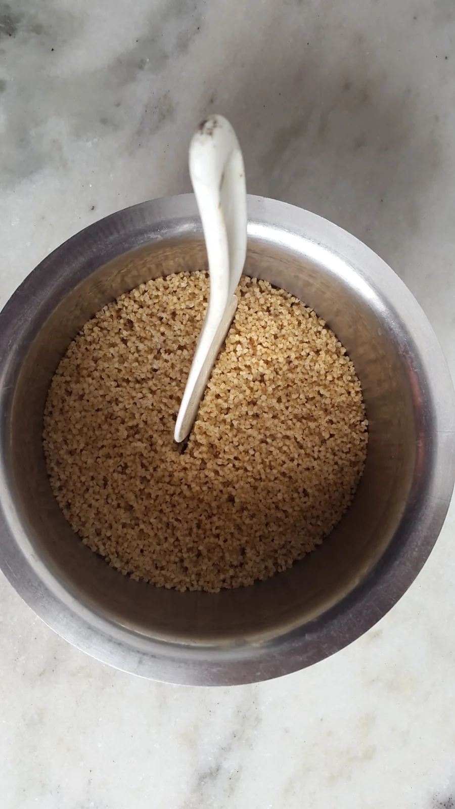
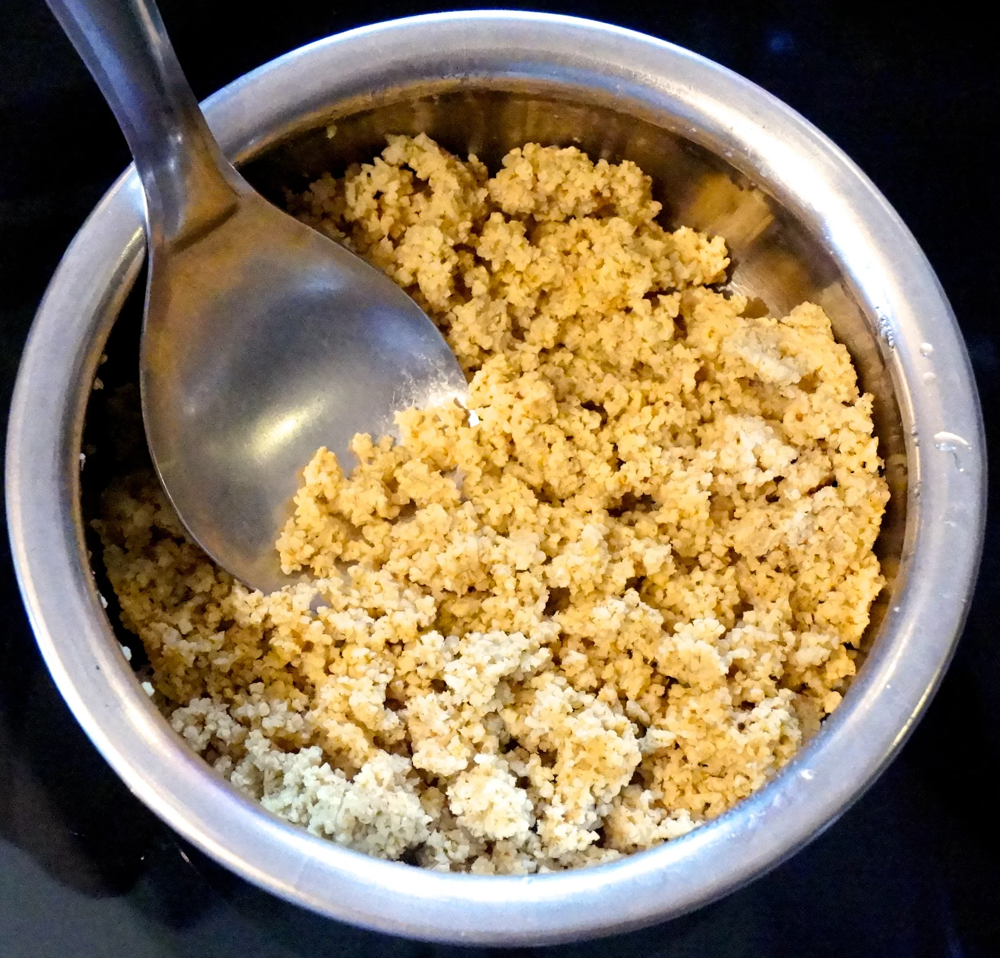
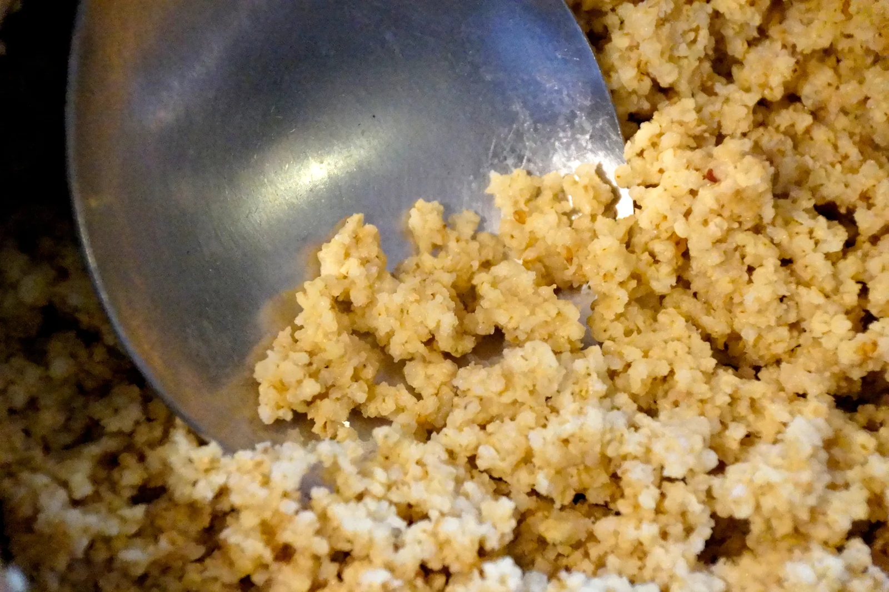
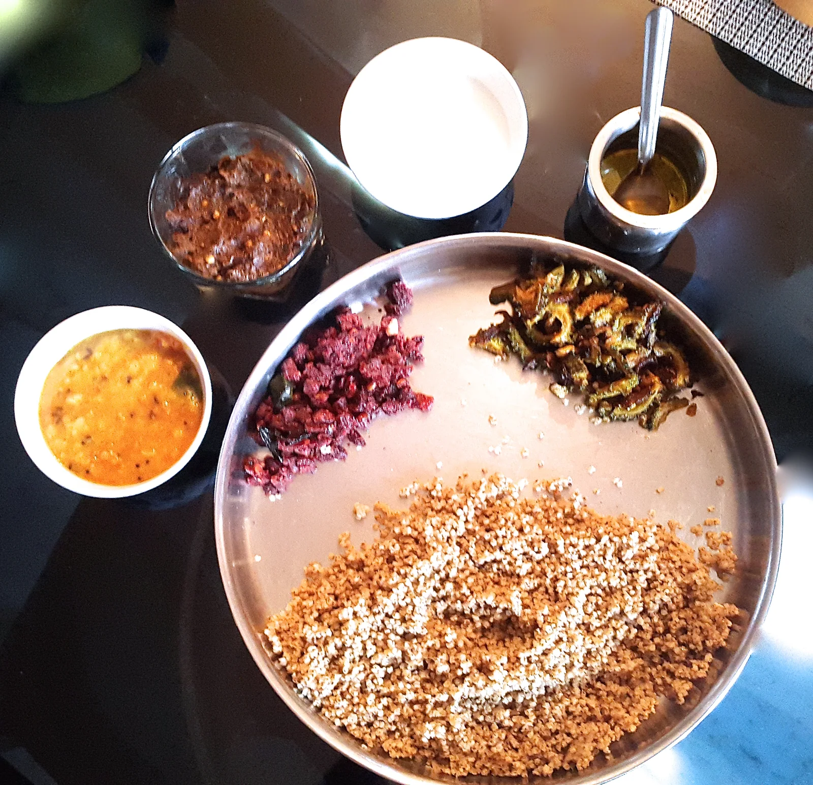
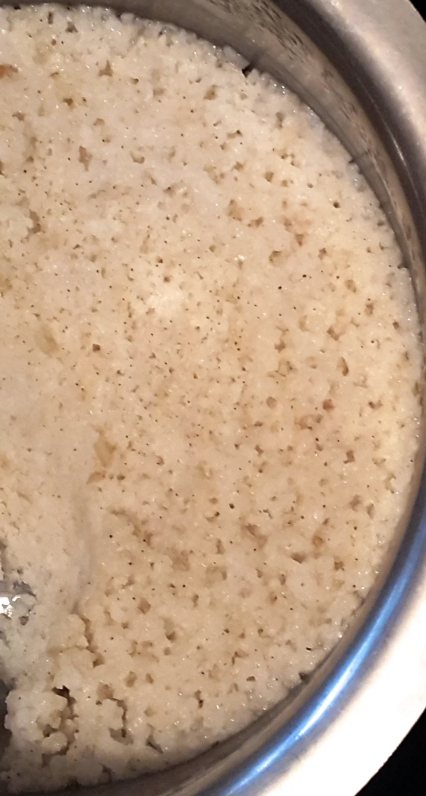
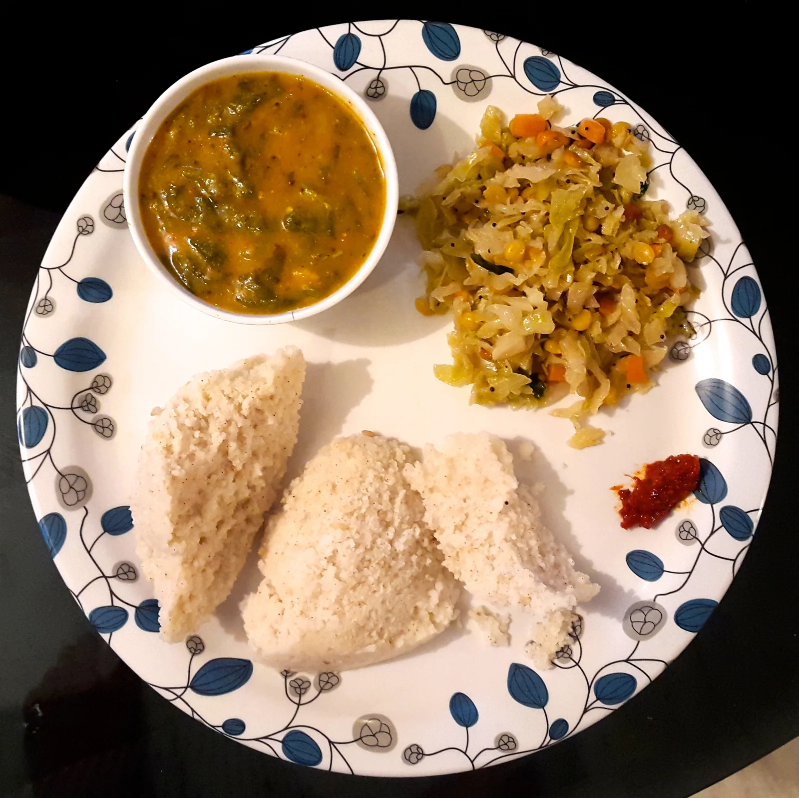

RICE with MILLET zone
'Siri Dhanya' MILLETS
COOKING MILLETS - RICE (Kodo Millet)
- Take 1 cup of Siri Dhanya Grains in to a vessel. Rinse and soak the millet in water for 5 hours to 7 hours.(Unpolished)
- Don’t squeeze the grains while washing or soaking. Just stir the grain with one finger and drain the water leaving the grain.
- Now, to cook Siri Dhanya, at a ratio of 1 : 2 grain to water , a dd 2 cups of water to one cup of soaked grain.
- The grain can now be cooked in the pressure cooker. Three whistles in a pressure cooker is enough to make your 'Siri Dhanya' nice and fluffy to eat.
NOTE: All 5 Siri Dhanya can be used to cook 'Rice'. Cooking once or twice will make you wiser in terms of whistles of cooker and presoaking times. C ooked 'Siri Dhanya' 'Rice' can be eaten with Curries, Dal, Chutneys and Curd/ yoghurt in a typical meal.
OR go ahead and make this 'rice' in to any dish you like.
Ex : Fried Rice or Yellow Rice or Lemon Rice etc

You can check a video showing how cooked rice looks :
(From Little Millet) https://youtu.be/K0jGP2zoAgs
Browntop millet cooked


A typical meal with Millet Zone Siridhanya millets




Foxtail millet khichidi
Ingredients
- Foxtail Millet - 1 cup
- Onion - 1 big chopped finely
- Tomato - 1 chopped roughly
- Ginger garlic paste - 1/2 tsp
- Carrot - 1 small finely chopped
- Peas
- Beans
- Turmeric powder - 1/4 teaspoon.
- Water - 2 1/4 cups
- Coriander leaves (garnish)
- Salt - to taste
- Oil - 2 tsp
- Mustard Seeds - 3/4 tsp
- Green Chilli - 1 slitted
- Urad Dal - 1/2 tsp
- Curry leaves (8-10)
Method:
- Rinse 1 cup of millet and soak it in water for 90-120 mins, Set aside.
- Heat oil in a pressure cooker - add mustard seeds, urad dal, curry leaves and green chilli and let it crackle then add onion and ginger garlic paste.
- Add tomatoes and saute for a few minutes then add the vegetables along with turmeric powder and required salt, saute for 3 mins.
- Drain the water from the millet and add it along with vegetables, give a mix.
- Add 2 1/4 cups of water and cook in pressure cooker for 2 or 3 whistles in low medium flame. Once pressure releases open and fluff it.
- Garnish with corainder leaves. Viola!
NOTE: This can be made with Kodo, Little, Browntop and Barnyard millet too.
Barnyard millet khichidi
Ingredients
- Barnyard Millet - 1 cup
- Onion - 1 chopped finely
- Tomato (optional)
- Ginger garlic paste - 1/2 tsp
- Carrot - 1 small finely chopped
- Peas
- Beans
- Garam Masala
- Water - 2 cups
- Coriander leaves (garnish)
- Salt - to taste
- Oil - 2 tsp
- Mustard Seeds - 3/4 tsp
- Green Chilli - personal preference
- Curry leaves (8-10)
Method:
- Rinse 1 cup millet and soak in water for 90-120 mins, Set aside.
- Cook the rice with 2 cups of water in a pressure cooker for three whistle's and after the steam is out, take out the cooked grain and spread it out on a plate to cool it off.
- Heat oil in wok/pan - add mustard seeds, curry leaves and green chilli and let it crackle then add onion and ginger garlic paste.
- Add tomatoes and saute for a few minutes then add the vegetables along and required salt, saute for 5 mins.
- Add the cooked the grain, and mix with the vegetables.
- Mix well. Add Garam masala and salt, if any needed.
- Cook for 10 minutes. Serve hot with Pickle.
NOTE : This can be made with Foxtail, Browntop, Kodo and Little millet too.
Little millet coconut rice
Ingredients
- Little Millet - 1 cup
- Onion - 1 chopped finely
- 1 Cup Freshly Grated Coconut
- Carrot - 1 small finely chopped
- Beans
- Garam Masala
- Water - 2 cups
- Coriander leaves (garnish)
- Salt - to taste
- Oil/Ghee - 2 tsp
- Mustard Seeds - 3/4 tsp
- Green Chilli - personal preference
- Curry leaves (8-10)
Method:
- Rinse 1 cup millet and soak it in water for 120 mins, Set aside.
- Cook the rice with 2 cups of water in a pressure cooker for three whistle's and after the steam is out, take out the cooked grain and spread it out on a plate to cool it off.
- Heat oil/ghee in a wok/pan, and add Mustard seeds and Curry leaves.
- When Mustard seeds have popped, add Green Chillies and chopped Onions.
- Fry until the onion becomes transparent.
- Add grated Coconut and mix well. Add Salt to taste.
- Mix the Little Millet rices to this and mix it thoroughly and evenly. Once the rice is heated, remove from flame and the dish is ready to be served. Serve it with some coconut chutney.
NOTE : This can be made with Foxtail, Browntop, Kodo and Barnyard millet.
Proso millet coconut rice
Ingredients
- Proso Millet - 1 cup
- Onion - 1 chopped finely
- 1 Cup Freshly Grated Coconut
- Carrot - 1 small finely chopped
- Beans
- Garam Masala (optional)
- Water - 2 cups
- Coriander leaves (garnish)
- Salt - to taste
- Oil/Ghee - 2 tsp
- Mustard Seeds - 3/4 tsp
- Green Chilli - personal preference
- Curry leaves (8-10)
Method:
- Rinse 1 cup millet and soak it in water for 120 mins, Set aside.
- Cook the rice with 2 cups of water in a pressure cooker for three whistle's and after the steam is out, take out the cooked grain and spread it out on a plate to cool it off.
- Heat oil/ghee in a wok/pan, and add Mustard seeds and Curry leaves.
- When Mustard seeds have popped, add Green Chillies and chopped Onions.
- Fry until the onion becomes transparent.
- Add grated Coconut and mix well. Add Salt to taste.
- Mix the Proso Millet rice to this and mix it thoroughly and evenly.
- Once the rice is mixed, remove from flame and the dish is ready to be served.
Browntop millet mango rice
Ingredients
- Browntop Millet - 1 cup
- Onion - 1 chopped finely
- 1 Cup Freshly Grated raw Mango (With skin. If bitter, Take out the skin and grate)
- Carrot - 1 small finely chopped
- Turmeric Powder 1/4 teaspoon
- Beans chopped
- Water - 2 cups
- Coriander leaves (garnish)
- Salt - to taste
- Oil/Ghee - 2 tsp
- Mustard Seeds - 3/4 tsp
- Green Chilli - personal preference
- Curry leaves (8-10)
Method:
- Rinse 1 cup millet and soak it in water for 120 mins, Set aside.
- Cook the presoaked rice with 2 cups of water in a pressure cooker for three whistle's and after the steam is out, take out the cooked grain and spread it out on a plate to cool it off.
- Heat oil/ghee in a wok/pan, and add Mustard seeds and Curry leaves.
- When Mustard seeds have popped, add Green Chillies and chopped Onions with turmeric powder.
- Fry until the onion becomes transparent. But let the crunh of the onions be there.
- Add freshly grated raw mango and mix well for 2 minutes. Add salt to taste.
- Mix the Browntop Millet rice to this and mix it thoroughly and evenly.
- Once the rice is mixed, remove from flame and let the dish cool down.
- Squeeze little lemon, if needed.
- Serve in a bowl with pickle.
Links from this page
Source: Original Millets Zone · Millet rice
Content captured 25 October 2026. Reorganized for reading; purchase-related material excluded.
Content captured 25 October 2026. Reorganized for reading; purchase-related material excluded.